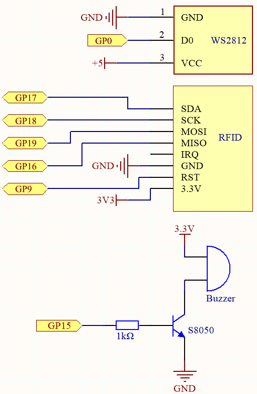

Note
Hello, welcome to the SunFounder Raspberry Pi & Arduino & ESP32 Enthusiasts Community on Facebook! Dive deeper into Raspberry Pi, Arduino, and ESP32 with fellow enthusiasts.
Why Join?
Expert Support: Solve post-sale issues and technical challenges with help from our community and team.
Learn & Share: Exchange tips and tutorials to enhance your skills.
Exclusive Previews: Get early access to new product announcements and sneak peeks.
Special Discounts: Enjoy exclusive discounts on our newest products.
Festive Promotions and Giveaways: Take part in giveaways and holiday promotions.
üëâ Ready to explore and create with us? Click [here] and join today!
7.8 RFID Music Player¶
Through our previous project, 6.5 Radio Frequency Identification, we learned that the MFRC522 module allows us to write up to 48 letters of information to the card (or key), including both the key and identity information, as well as the music score.
As an example, if you write EEFGGFEDCCDEEDD EEFGGFEDCCDEDCC, the buzzer will play the music when the card (or key) is read again. It can also be equipped with an WS2812 to display amazing effects.
You can find more sheet music on the Internet, or even write your own music, put them into the card (or key), and share them with your friends!
Schematic

Wiring
{kind=link}
Code
Open the
6.5_rfid_write.pyfile under the path ofeuler-kit/micropython, then click “Run Current Script” or simply press F5 to run it.After running, type
EEFGGFEDCCDEEDD EEFGGFEDCCDEDCCin the Shell and then put the card (or key) close to the MFRC522 module, this way an Ode an Joy score is stored in.Open the
7.8_rfid_music_player.pyfile under the path ofeuler-kit/micropythonor copy this code into Thonny, then click “Run Current Script” or simply press F5 to run it.from mfrc522 import SimpleMFRC522 import machine import time from ws2812 import WS2812 import urandom # ws2812 ws = WS2812(machine.Pin(0),8) # mfrc522 reader = SimpleMFRC522(spi_id=0,sck=18,miso=16,mosi=19,cs=17,rst=9) # buzzer NOTE_C4 = 262 NOTE_D4 = 294 NOTE_E4 = 330 NOTE_F4 = 349 NOTE_G4 = 392 NOTE_A4 = 440 NOTE_B4 = 494 NOTE_C5 = 523 buzzer = machine.PWM(machine.Pin(15)) note=[NOTE_C4,NOTE_D4,NOTE_E4,NOTE_F4,NOTE_G4,NOTE_A4,NOTE_B4,NOTE_C5] def tone(pin,frequency,duration): pin.freq(frequency) pin.duty_u16(30000) time.sleep_ms(duration) pin.duty_u16(0) # lightup def lumi(index): for i in range(8): ws[i] = 0x000000 ws[index] = int(urandom.uniform(0, 0xFFFFFF)) ws.write() # encode text to index words=["C","D","E","F","G","A","B","N"] def take_text(text): string=text.replace(' ','').upper() while len(string)>0: index=words.index(string[0]) tone(buzzer,note[index],250) lumi(index) new_str="" for i in range(0, len(string)): if i != 0: new_str = new_str + string[i] string=new_str # read card def read(): print("Reading...Please place the card...") id, text = reader.read() print("ID: %s\nText: %s" % (id,text)) take_text(text) read()
By putting the card (or key) close to the MFRC522 module again, the buzzer will play the music stored on the card (or key), and the RGB strip will light up in a random color.